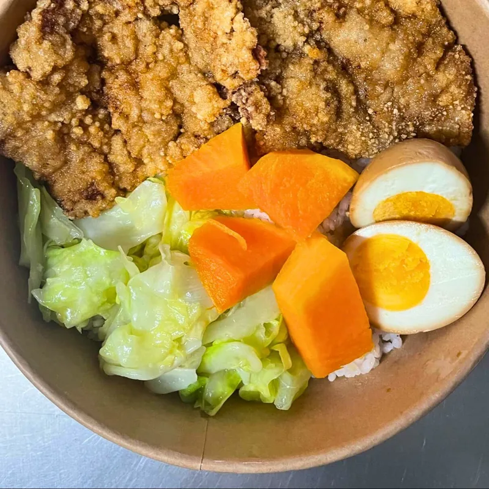
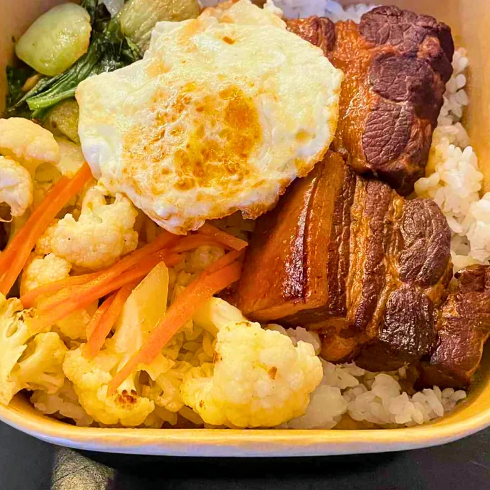
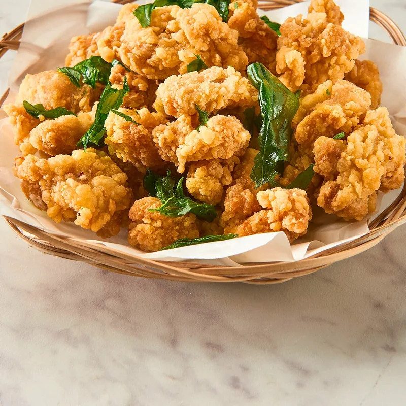
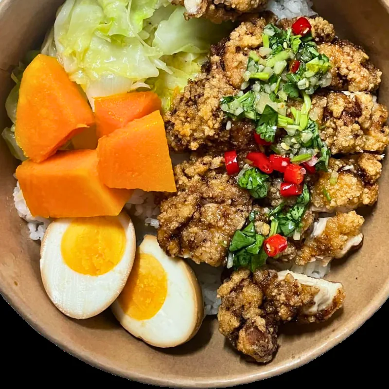
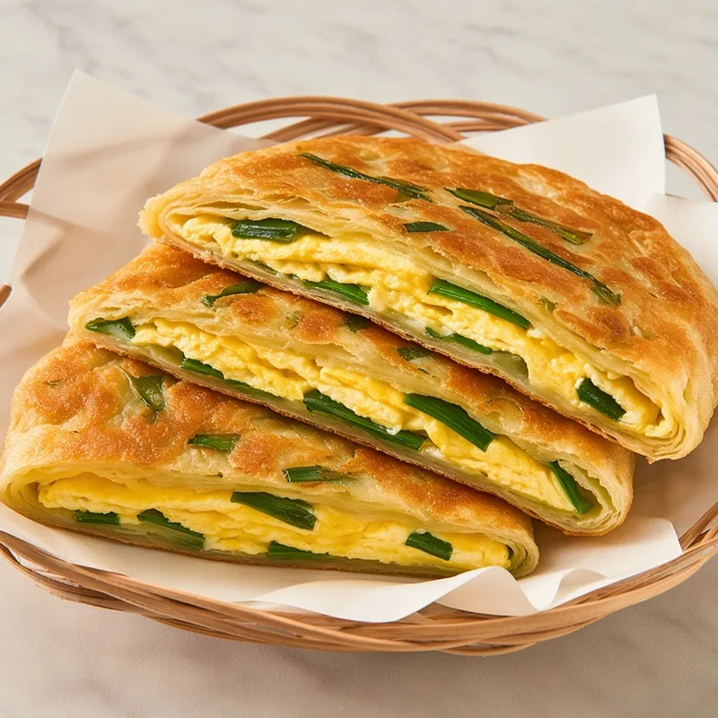
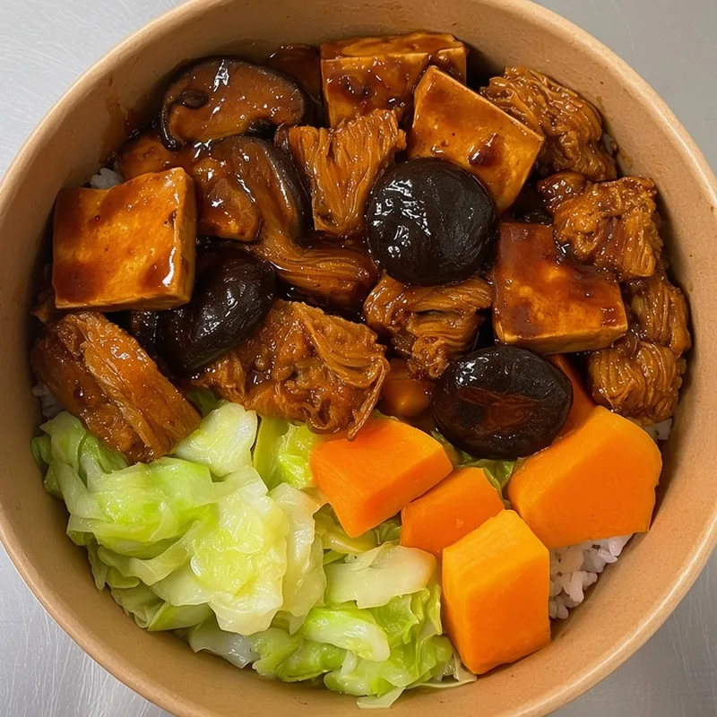

實拍Real photoIsithombe sangempela排骨飯Pork ChopInyama Yengulube
Crispy Pork Chop Bento
酥脆多汁的招牌炸排骨，搭配白飯與三樣家常小菜。Crispy, juicy signature pork chop served with rice and three homestyle sides.Inyama ekhanyayo enobumnandi, ihanjiswa nelayisi.
台灣家常料理Authentic Taiwanese KitchenIkhishi LaseTaiwan
將台灣街頭巷尾的家鄉滋味，帶到約翰尼斯堡。每一道菜，都是一段關於記憶與溫度的故事。Bringing the soul of Taiwan's street kitchens to Johannesburg. Every dish is a story of memory and warmth.Siletha umoya wamakhishi aseTaiwan eJohannesburg. Isidlo ngasinye yindaba yenkumbulo nokufudumala.

實拍Real photoIsithombe sangempela關於江味齋Our StoryIndaba Yethu
江味齋自 2025 年於 Edenburg 開業，秉持「用心做菜、講究食材」的信念，將台灣家傳的料理手藝，原汁原味呈現在南非的餐桌上。Founded in 2025 in Edenburg, JiangWay is built on a simple belief — cook with heart, source with care — bringing the genuine flavours of Taiwanese home cooking to South African tables.Yasungulwa ngo-2025 e-Edenburg, i-JiangWay yakhelwe enkolelweni elula — pheka ngenhliziyo — iletha ukunambitha kweqiniso kokupheka kwasekhaya kwaseTaiwan.
從酥香排骨、滷得入味的控肉，到一碗熱騰騰的肉羹麵，我們相信，真正的好味道，來自於對細節的執著與對家鄉的思念。無論內用、外帶、外送，江味齋都希望成為你在異鄉最熟悉的那盞燈火。From crispy pork chops to slow-braised pork belly and a steaming bowl of pork thick soup noodles, we believe great taste comes from devotion to detail and longing for home. Dine in, take away, or have it delivered — JiangWay hopes to be your most familiar light away from home.Kusukela ezinkomeni ezikhwabanisiwe kuya esobho lengulube, sikholelwa ukuthi ukunambitha okuhle kuvela ekuzinikeleni. Yidlela ngaphakathi, uyithathe, noma ilethwe — i-JiangWay ifuna ukuba ngukukhanya kwakho okujwayelekile.

實拍Real photoIsithombe sangempela招牌菜色Signature MenuImenyu
每一道都是江味齋的心血之作，用最真誠的手藝，重現台灣的經典滋味。Each dish is crafted with sincerity, recreating the timeless flavours of Taiwan.Isidlo ngasinye senziwe ngobuqotho, sakha kabusha ukunambitha kweTaiwan.

實拍Real photoIsithombe sangempelaCrispy Pork Chop Bento
酥脆多汁的招牌炸排骨，搭配白飯與三樣家常小菜。Crispy, juicy signature pork chop served with rice and three homestyle sides.Inyama ekhanyayo enobumnandi, ihanjiswa nelayisi.
Braised Pork Belly Bento
慢火滷製、入口即化的五花控肉，是最道地的台灣味。Slow-braised, melt-in-your-mouth pork belly — the most authentic Taiwanese taste.Ibilisiwe kancane, incibilika emlonyeni.

實拍Real photoIsithombe sangempelaTW Pepper Chicken Bento
嫩滑炸雞淋上特製椒麻醬，麻香微辣、層次豐富。Tender fried chicken in our signature peppercorn sauce — fragrant and gently spicy.Inkukhu ethambile enesoso ekhethekile, enuka kamnandi.

AI 示意AI illustrationUmfanekiso we-AIScallion Egg Crepe
外酥內Q的手工蔥油餅，包入金黃煎蛋，香氣四溢。Handmade scallion crepe — crispy outside, chewy inside, wrapped around a golden egg.I-crepe eyenziwe ngesandla, ekhanyayo ngaphandle.

AI 示意AI illustrationUmfanekiso we-AIVegetarian Bento
嚴選時令蔬食與豆製品，清爽健康也能滿足味蕾。Seasonal vegetables and tofu — light, healthy, and deeply satisfying.Imifino yesizini ne-tofu — ekhululekile futhi enempilo.
🌞 Sunning Bakery · 姊妹烘焙品牌Sister BakeryIbhekari Elingudadewethu
除了道地台菜，江味齋更推出自家烘焙品牌 Sunning Bakery。從手工歐式麵包、訂製蛋糕到精緻甜點，每一件作品都以優質食材與傳統工法，承載著對美味的執著。Beyond authentic Taiwanese cuisine, JiangWay presents Sunning Bakery. From artisan breads and custom cakes to delicate pastries, every creation carries our devotion to flavour, made with premium ingredients and time-honoured methods.Ngaphandle kokudla kwaseTaiwan, i-JiangWay yethula i-Sunning Bakery. Kusukela ezinkweni eziphekiwe kuya emakhekheni, konke kwenziwe ngothando.
服務項目ServicesIzinsizakalo
不論是公司行號的會議午餐，還是親友間的歡聚時光，江味齋都能為你準備道地的台灣家常料理。從菜色規劃到準時送達，讓每一場聚會都吃得安心、吃得盡興。Whether it's a working lunch for your company or a celebration with family and friends, JiangWay can prepare authentic Taiwanese home cooking for the occasion — from menu planning to on-time delivery.Kungaba ngumhlangano wenkampani noma umbuthano womndeni, i-JiangWay ingakulungiselela ukudla kwaseTaiwan.
員工午餐、會議、教育訓練都適合。大量便當統一準備、分裝清楚，讓你專心開會，吃飯的事交給我們。Staff lunches, meetings and training days. Bento boxes prepared in bulk and clearly packed, so your team can focus on work while we take care of the food.Ukudla kwasemini kwabasebenzi nemihlangano — sikulungiselela ama-bento amaningi.
生日派對、家庭聚會、親友聚餐，把台灣家常菜端上你的餐桌，賓主盡歡。Birthdays, family gatherings and get-togethers — bring Taiwanese home cooking to your table and enjoy the occasion with your guests.Amaphathi osuku lokuzalwa nemibuthano yomndeni — ukudla kwasekhaya kwaseTaiwan etafuleni lakho.
農曆新年、中秋節、社團或學校活動，用道地台灣味為活動增添節慶氣氛。Lunar New Year, Mid-Autumn Festival, community or school events — add a festive touch with authentic Taiwanese flavours.UNyaka Omusha WaseShayina nemicimbi yomphakathi — engeza ukunambitha kweTaiwan.
依照場合、人數與預算規劃菜色，也可以安排素食或特殊飲食需求，歡迎和我們討論。Menus planned around your occasion, guest count and budget, including vegetarian or other dietary needs. Just talk to us.Imenyu ehlelwe ngokwesikhathi, inani labantu nesabelomali — kuhlanganise nokudla kwemifino.
請於活動日兩週前預訂。外送範圍：從 Rivonia 店面約 50 公里內，訂單總金額滿 R10,000 即可外送。企業送禮也可參考企業餐券方案。Please book at least 2 weeks before your event. Delivery: within about 50 km of our Rivonia kitchen, for orders over R10,000. For corporate gifts, see our corporate vouchers.Sicela ubhuke emasontweni ama-2 ngaphambi komcimbi. Ukulethwa: cishe ngaphakathi kuka-50 km ukusuka e-Rivonia, kuma-oda angaphezu kuka-R10,000. Bona futhi amavawutsha.
企業餐券方案Corporate VouchersAmavawutsha Ezinkampani
可用於內用、外帶或外送，最靈活的選擇。Valid for dine-in, takeaway or delivery — the flexible choice.Isebenza kukho konke — ukukhetha okuguquguqukayo.
每張省 R10 · 10% 折扣Save R10 each · 10% offYonga R10 · 10%
適合員工福利、團隊聚餐，省心又貼心。Perfect for employee perks and team meals.Ekulungele izinzuzo zabasebenzi.
每張省 R20 · 20% 折扣Save R20 each · 20% offYonga R20 · 20%
大量採購享最優惠，可客製專屬款式。Best value in bulk, with custom designs available.Inani elihle kakhulu, nemiklamo yakho.
聯絡我們Get in TouchThintana Nathi